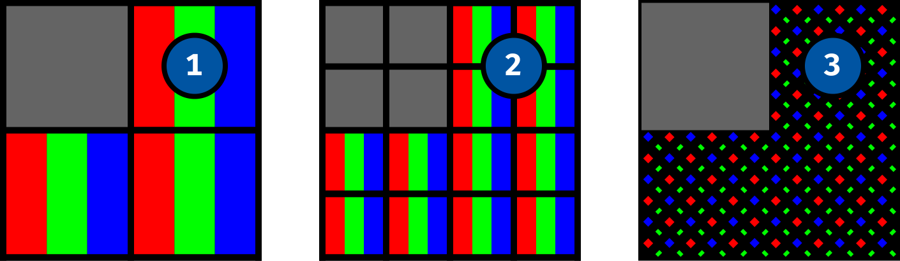

Publisher 2 · 2020
Erscheinungsdatum · 2020
Lizenzen
Dieser Text ist von Stefan Huber unter der Lizenz CC-BY-SA 4.0 veröffentlicht. Publisher erhält das Recht die Inhalte ohne Copyleft (Share Alike) zu publizieren.
Masseinheiten im Web – relative oder absolute Angaben
Grössenangaben in Illustrations- und Print-Produkten sind meist einfach zu verstehen. Sie bilden ein globales und steifes Koordinatensystem ab. Im Web sind wir aber froh, wenn wir verschiedene Masseinheiten haben, die sich an verschiedenen Gegebenheiten anpassen können.
Masseinheiten
Seit dem ausgehenden 18. Jahrhundert gibt es mit dem Meter ein standardisiertes Längenmass, das global eine Kommunikation über Dimensionen vereinfacht. Da wichtige Vertreter der frühen digitalen Grafikprogramme in Amerika beheimatet waren, sind für die Grafische Industrie häufige Basis-Technoligien noch immer auf Zoll-Angaben basierend. So werden bei PDF zum Beispiel die Massangaben intern in Einheiten von 1⁄72-Zoll gespeichert. Der so genannte DTP-Punkt.
Einwenig anders verhält es sich bei Webseiten in HTML. Als im Dezember 1996 der erste Standard für Cascading Style Sheets (CSS) veröffentlicht wurde, waren bereits in diser Spezifikation zwei Typen von Masseinheiten definiert; relative und absolute. Für damalige Verhältnisse fast schon visionär kann man da lesen: «Style sheets that use relative units will more easily scale from one medium to another.». (Style Sheets, die relative Einheiten verwenden, lassen sich leichter von einem Medium zum anderen skalieren.). Damals war diese Aussage noch vor dem Hintergrund zu verstehen, dass Websites nicht selten ausgedruckt wurden und somit ein Medienwechsel vollzogen wird. Heut is die gedruckte Website ein zu vernachlässigender Faktor bei der Wahl einer Masseinheit. Vielmehr ist heute Rücksicht auf verschiedene Ausgabegrössen zu nehmen. Diverse Geräteklassen (Mobile, Tablet, Desktop) haben ganz unterschiedliche Anforderungen und um nicht alle Grössendefinitionen mehrfach zu schreiben, werden viele Dimensionen in relativen Angaben definiert.
Absolute Angaben
Die wohl am häufigst verwendete absolute Masseinheit im Webdesign ist die Einheit Pixel. In CSS wird diese Masseinheit mit px definiert. Wenn also ein farbiges Quadrat mit 200px Kantenlänge definiert wird, weiss man, dass dieses genau so gross auf dem Bildschirm erscheinen wird, wie ein Bild, welches 200 × 200 px als Inhalt hat. Viel mehr kann man aber bereits nicht mehr sagen. Denn die effektive Grösse am Gerät des Betrachters kann nicht vorhergesagt werden. Je nach Bildschirmgrösse und Auflösungsdichte des Geräts kann dies varrieren. Nicht einmal die Intuitive Annahme, dass ein Pixel im CSS definiert ein Pixel auf dem Bildschirm erzeugt ist richtig. Vielmehr gibt es heute ein «device pixel ratio», welches bei der Anzeige eine entscheidende Rolle spielt.
Die selbe Grössendefinition in Pixeln erscheint auf verschiedenen Bildschirmen ganz anders.
CSS zu Bild
Doch warum erscheinen die Pixelangaben unterschiedlich gross? Die Ausgabe einer Website wird von einem Renderer gerastert (Teil vom Browser). Der Renderer erzeugt ein «Bild» der auszugebenden Elemente je nach Fähigkeit des Screens. Nachfolgend die Darstellung von einem Bildschirm mit «einem» dunklen Pixel oben links, welches in CSS mit width: 1px und height: 1px definiert wurde.

- Rendering für ein «normales» Gerät
- Rendering für ein «retina» Gerät mit einem «device pixel ratio» von 2
- Rendering für ein «retina» Gerät mit einem «device pixel ratio» von 3
Bild zu Gerät
Je nach Auflösungsdichte und Spezifikation des Gerätes, werden dann die errechneten Daten auf das Display ausgegeben. Bei LCD-Displays wird jeder Pixel über ein dreigeteiltes Lichtelement mit den gefilterten Farben Rot, Grün, Blau erzeugt. Bei einem modernen OLED-Display bestehen die Pixel aus einzeln angesteuerten farbigen LEDs.

- Darstellung auf «normalem» LCD-Display
- Darstellung auf «retina» LCD-Display mit einem «device pixel ratio» von 2
- Darstellung auf «retina» OLED-Display mit einem «device pixel ratio» von 3
Natürlich ergib die verdoppelung von Pixeln keine bessere Qualität aber bei Text oder Bildern ist die erweiterte Auflösung hilfreich um Schärfe und Detailreichtum zu erhöhen.

Die iOS Systemschrift (San Francisco Pro Text Regular) bei 17 px auf einem iPhone X (Foto)
Man sieht an den Beispielen, dass die Ausgabe sehr stark Hardwareabhängig geschieht. Welche Dimension nun aber ein Pixel effektiv hat, wurde bei der ganzen Berechnung nicht berücksichtigt und ist von Hersteller zu Hersteller anders und somit auch die Abbildungsgrösse nicht einheitlich.
Weitere absolute Masseinheiten
Neben der Masseinheit px gibt es noch weitere absolute Masseinheiten. So gibt es zum Beispiel mm für Millimeter oder in für Zoll. Diese werden jedoch selten verwendet, da sie ausser bei der Druckausgabe fast keine Rolle spielen. Und auch für den Druck dienen diese Angaben meist nur zur Definition für Druckränder, da die Typografie oder der Seitenaufbau meistens relativ formatiert wird.
Relative Masseinheiten
Eine der wohl am meiten verwendete CSS-Einheit ist die Angabe in %. Dies wird vorallem für Breitenangaben verwendet. Die Angabe in Prozent bezieht sich dabei immer auf das umschliessende Objekt. Diese Aufteilung bleibt proportional gleich – unabhängig vom Viewport (Bildschirmausschnitt). Auch lassen sich damit zum Beispiel (mit Tricks) Bilder proportional verkleinern und vergrössern ohne das Bildverhältnis zu verändern.
EM – relativ zu was schon wieder?
Bei der Grössenangabe em handelt es sich um eine relative Angabe einer Dimension zu der Schriftgrösse des umschliessenden Elements. In typografischen Systemen können so Elemente passend zu der momentanen Schrifgrösse dimensioniert oder verschoben werden. Diese Einheit – wie alle anderen hier besprochenen Einheiten – kann nicht nur auf Schrift angewandt werden, sondern auch auf beliebig andere Objektdimensionen (Grösse, Position, …). Da sich die Angabe immer auf das umschliessende Element bezieht, ist die Verschachtelung der Komponenten entscheidend.
Bei diesem Beispiel wurde die Schriftgrösse der Seite jeweils auf den Viewport angepasst. Die einzelnen Kinds-Elemente tragen alle eine Schriftgrösse von 2em.
REM – relativ zum Obersten
Bei der Grössenangabe rem wird die Grösse immer relativ zur Schrifgrösse des obersten Elements im Dokument (HTML-Tag) angegeben. So können Titelhierarchien bequem aufgebaut werden ohne dabei auf die Verschachtelung zu achten. Für die Anpassung auf andere Viewports muss dann nur noch die Schriftgrösse vom HTML-Tag entsprechend angepasst werden.
Im gegensatz zur definition mit em kann nun ohne Rücksicht auf Verschachtelung gearbeitet werden.
Viewportabhängige Einheiten
Weitere relative Einheiten, die ab und an noch gebraucht werden, sind die viewportabhängigen Einheiten. Sie beziehen sich also darauf wie gross der Viewport, in dem die Inhalte gerade betrachtet werden, ist. Hier eine Übersicht von viewportabhängige Einheiten:
vh– 1% der Viewporthöhevw– 1% der Viewportbreitevmin– 1% der schmaleren Viewportdimensionvmax– 1% der grösseren Viewportdimension
Die selbe Grössendefinition die sich auf den Vieport bezieht erscheint auf verschiedenen Bildschirmen jeweils angepasst.
Mischung
Nicht eine eigentliche Masseinheit von CSS, aber dennoch ideal zur Massangabe ist die so genannte calc()-Funktion. Mit ihr lassen sich beliebige CSS-Einheiten mischen. Möchte man zum Beispiel ein Objekt auf die Viewportbreite skallieren, aber links und rechts noch einen Rand von je 10 px lassen, so könnte man die Breite wie folgt angeben: calc(100vw - 20px)
Fazit
Nebst den hier gezeigten Massangabe gibt es noch diverse mehr. Jedoch werden diese nur sehr selten gebraucht. Oder wollten Sie schon mal eine Grössenangabe abhängig von der Breite der Ziffer Null tätigen? In CSS hätten Sie die Chance dazu (Einheit ch)…
Das mentale Modell, wie man eine Gestaltung proportioniert, scheinen für eine Website auf den ersten Blick eher Komplex. Jedoch erkennt man in der Anwendung schnell, dass ein bewusster Einsatz der «richtigen» Masseinheit am richtigen Ort einem viel Arbeit bei der Viewport-Adaption abnimmt. Einer tolle Gestaltung von Mobile bis Desktop steht nichts mehr im Weg.
Autor
Stefan Huber unterrichtet an der Schule für Gestaltung Zürich im Lehrgang HF Interaction Design und ist als Web-Entwickler tätig.